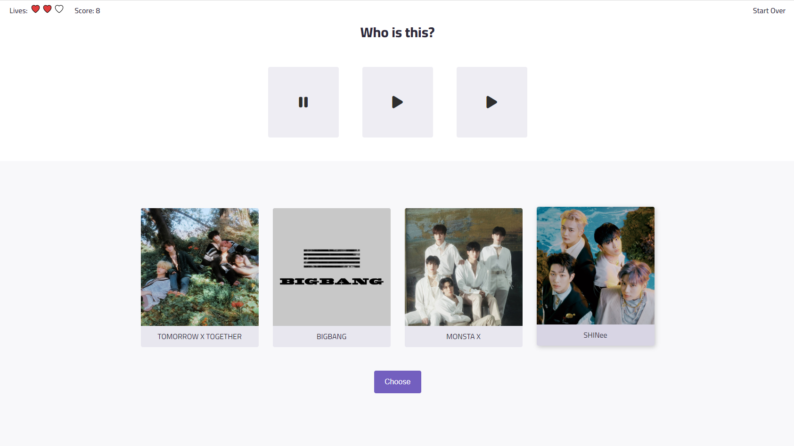

Hi! My name is Kylie. In college, I studied biology because of my love for animals and nature. But after graduating, I was seeking adventure, so I moved to South Korea to teach English through a program called EPIK. This experience was filled with challenges, but the culture, food, and my wonderful students made it all worth it!
During my time in Korea, I gave a lot of thought to what I wanted to do for my career in the long run (since teaching overseas is almost always a temporary gig), and I remembered that when I was a kid, I always loved playing with HTML and CSS, building webpages, and customizing my Neopets shop with tiled background images and MIDI music.
So, after returning to the States, I began studying web development in my free time. Luckily, it turned out that I still really enjoyed it! As I continued, I learned how to solve problems and build full applications using front-end languages and frameworks like JavaScript and React.
During this time, I found out about Cook Systems' FastTrack program. With their instruction and support, I was able to expand my skillset to the back end with technologies like Java and Spring, as well as solidify my knowledge on the front end.
In my free time, I enjoy drawing (both digitally and traditionally), listening to weird music, learning languages, and indoor bouldering (though I'm not any good at it yet).